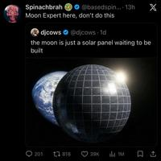

0


Slashdot reader BrianFagioli writes: The Salvation Army has launched what it calls the world's first digital thrift store inside Roblox, an experience named Thrift Score that lets players browse virtual racks and buy digital fashion for their avatars.
While I understand the strategy of meeting Gen Z and Gen Alpha where they already spend time and money, I feel uneasy about turning something that, in the real world, often serves low income families in genuine need into a gamified aesthetic inside a video game, even if proceeds support rehabilitation and community programs, because a thrift store is not just a quirky brand concept but a lifeline for many people, and packaging that reality as entertainment creates a strange disconnect that is hard to ignore.
"To be clear, proceeds from Thrift Score are intended to support The Salvation Armyâ(TM)s programs nationwide..." this article points out. "If it drives awareness and funds programs that help people in need, that is a win. But if it turns thrifting into just another cosmetic skin in a digital marketplace, then we should at least be willing to say that it feels off."
Read more of this story at Slashdot.
CNN reports on a 13,000-year-old glacier in a Romanian cave, where scientists say a bacterial strain they thawed and analyzed "is resistant to 10 modern antibiotics used to treat diseases such as urinary tract infections and tuberculosis."
But there's no evidence the bacteria is harmful to humans, CNN notes, and "The scientists said the insights they have gained from the work may help in the fight against modern superbugs that can't be treated by commonly used antibiotics."
Analysis of the Psychrobacter SC65A.3 genome revealed 11 genes that are potentially able to kill or stop the growth of other bacteria, fungi and viruses... Matthew Holland, a postdoctoral researcher in medicinal chemistry at the UK's University of Oxford, said that researchers were searching in new and extreme environments, such as ice caves and the seafloor, for biomolecules that could be developed into new antibiotic drugs. He was not involved in the new study. "The team in Romania found this particular bug had resistance to 10 reasonably advanced synthetic antibiotics and that in itself is
interesting," he said. "But what they report as well is that it secreted molecules that were able to kill a variety of already resistant, harmful bacteria.
"So the hope is that can we look at the molecules it makes and see if there's the possibility within those molecules to make new antibiotics."
Read more of this story at Slashdot.
An anonymous reader quotes a report from the Guardian: You wear them at work, you wear them at play, you wear them to relax. You may even get sweaty in them at the gym. But an investigation into headphones has found every single pair tested contained substances hazardous to human health, including chemicals that can cause cancer, neurodevelopmental problems and the feminization of males. [...] Researchers say that while individual doses from particular sources may be low, a "cocktail effect" of daily, multi-source exposure nevertheless poses potentially severe long-term risks to health. [...]
Researchers bought 81 pairs of in-ear and over-ear headphones, either on the market in the Czech Republic, Slovakia, Hungary, Slovenia and Austria, or from the online marketplaces Shein and Temu, and took them for laboratory analysis, testing for a range of harmful chemicals. "Hazardous substances were detected in every product tested," they said. Bisphenol A (BPA) appeared in 98% of samples, and its substitute, bisphenol S (BPS), was found in more than three-quarters. Synthetic chemicals used to stiffen plastic, BPA and BPS mimic the action of oestrogen inside organisms, causing a range of adverse effects including the feminization of males, early onset puberty in girls, and cancer. Previous studies have shown that bisphenols can migrate from synthetic materials into sweat, and that they can be absorbed through the skin.
"Given the prolonged skin contact associated with headphone use, dermal exposure represents a relevant pathway, and it is reasonable to assume that similar migration of BPA and its substitutes may occur from headphone components directly to the user's skin," the researchers said. Also found in the headphones tested were phthalates, potent reproductive toxins that can impair fertility; chlorinated paraffins, which have been linked to liver and kidney damage; and brominated and organophosphate flame retardants, which have similar endocrine disrupting properties to bisphenols. Most were, however, found in only trace quantities.
Read more of this story at Slashdot.
OpenAI is reportedly developing its first consumer hardware product: a $200-$300 smart speaker with a built-in camera capable of recognizing "items on a nearby table or conversations people are having in the vicinity." It's also said to feature Face ID-style authentication for purchases. The Verge reports: In addition to the smart speaker, OpenAI is "possibly" working on smart glasses and a smart lamp, The Information reports. (Apple may also be working on a smart lamp.) But OpenAI's glasses might not hit mass production until 2028, and while OpenAI has made prototypes of gadgets like the smart lamp, The Information says it's "unclear" if they'll be released and that OpenAI's devices plans are in early stages.
Read more of this story at Slashdot.
Users say Pinterest has become flooded with AI-generated images and heavy-handed automated moderation, with artists reporting wrongful takedowns and their hand-drawn work mislabeled as "AI modified." As the company doubles down on AI features and layoffs, longtime users argue the platform's creative ecosystem is being undermined. 404 Media reports: "I feel like, increasingly, it's impossible to talk to a single human [at Pinterest]," artist and Pinterest user Tiana Oreglia told 404 Media. "Along with being filled with AI images that have been completely ruining the platform, Pinterest has implemented terrible AI moderation that the community is up in arms about. It's banning people randomly and I keep getting takedown notices for pins." [...]
r/Pinterest is awash in users complaining about AI-related issues on the site. "Pinterest keeps automatically adding the 'AI modified' tag to my Pins... every time I appeal, Pinterest reviews it and removes the AI label. But then... the same thing happens again on new Pins and new artwork. So I'm stuck in this endless loop of appealing, label removed, new Pin gets tagged again," read a post on r/Pinterest. The redditor told 404 Media that this has happened three times so far and it takes between 24 to 48 hours to sort out. "I actively promote my work as 100% hand-drawn and 'no AI,'" they said. "On Etsy, I clearly position my brand around original illustration. So when a Pinterest Pin is labeled 'Hand Drawn' but simultaneously marked as 'AI modified,' it creates confusion and undermines that positioning."
Artist Min Zakuga told 404 Media that they've seen a lot of their art on Pinterest get labeled as "AI modified" despite being older than image generation tech. "There is no way to take their auto-labeling off, other than going through a horribly long process where you have to prove it was not AI, which still may get rejected," she said. "Even artwork from 10-13 years ago will still be labeled by Pinterest as AI, with them knowing full well something from 10 years ago could not possibly be AI." Other users are tired of seeing a constant flood of AI-generated art in their feeds. "I can't even scroll through 100 pins without 95 out of them being some AI slop or theft, let alone very talented artists tend to be sucked down and are being unrecognized by the sheer amount of it," said another post. "I don't want to triple check my sources every single time I look at a pin, but I refuse to use any of that soulless garbage. However, Pinterest has been infested. Made obsolete."
Read more of this story at Slashdot.
Meta is pivoting Horizon Worlds away from its original VR-centric metaverse vision and toward a mobile-first strategy, "explicitly separating" its Quest VR platform from the virtual world. TechCrunch reports: By going mobile-first, Horizon Worlds is positioning itself to compete with popular platforms like Roblox and Fortnite. "We're in a strong position to deliver synchronous social games at scale, thanks to our unique ability to connect those games with billions of people on the world's biggest social networks," Samantha Ryan, Reality Labs' VP of content, said in the blog post. "You saw this strategy start to unfold in 2025, and now, it's our main focus." Ryan went on to note that Meta is still focused on VR hardware. "We have a robust roadmap of future VR headsets that will be tailored to different audience segments as the market grows and matures," Ryan wrote.
Read more of this story at Slashdot.
An anonymous reader quotes a report from Bloomberg: Shares of cybersecurity software companies tumbled Friday after Anthropic PBC introduced a new security feature into its Claude AI model. Crowdstrike Holdings was the among the biggest decliners, falling as much as 6.5%, while Cloudflare slumped more than 6%. Meanwhile, Zscaler dropped 3.5%, SailPoint shed 6.8%, and Okta declined 5.7%. The Global X Cybersecurity ETF fell as much as 3.8%, extending its losses on the year to 14%.
Anthropic said the new tool will "scans codebases for security vulnerabilities and suggests targeted software patches for human review." The firm said the update is available in a limited research preview for now.
Read more of this story at Slashdot.
Long-time Slashdot reader theodp writes:
Last July, as Microsoft pledged $4 billion to advance AI education in K-12 schools, Microsoft President Brad Smith told nonprofit Code.org CEO/Founder Hadi Partovi it was time to "switch hats" from coding to AI. He added that "the last 12 years have been about the Hour of Code, but the future involves the Hour of AI." On Friday, Code.org announced leadership changes to make it so.
"I am thrilled to announce that Karim Meghji will be stepping into the role of President & CEO," Partovi wrote on LinkedIn. "Having worked closely with Karim over the last 3.5 years as our CPO, I have complete confidence that he possesses the perfect balance of historical context and 'founder-level' energy to lead us into an AI-centric future."
In a separate LinkedIn post, Code.org co-founder Cameron Wilson explained why he was transitioning to an executive advisor role. "Our community is entering a new chapter as AI changes and upends computer science as a discipline and society at large. Code.org's mission is still the same, however, we are starting a new chapter focused on ensuring students can thrive in the Age of AI. This new chapter will bring new opportunities, new problems to solve, and new communities to engage."
The Code.org leadership changes come just weeks after Code.org confirmed laid off about 14% of its staff, explaining it had "made the difficult decision to part ways with 18 colleagues as part of efforts to ensure our long-term sustainability." January also saw Code.org Chief Academic Officer Pat Yongpradit jump to Microsoft where he now helps "lead Microsoft's global strategy to put people first in an age of AI by shaping education and workforce policy" as a member of Microsoft's Global Education and Workforce Policy team.
Read more of this story at Slashdot.
Can being "very online" really affect our brains, asks the Washington Post:
Research suggests that scrolling through short videos on TikTok, Instagram or YouTube Shorts is affecting our attention, memory and mental health. A recent meta-analysis of the scientific literature found that increased use of short-form video was linked with poorer cognition and increased anxiety...
In a 2025 study published in the journal Translational Psychiatry, researchers looked at longitudinal data from more than 7,000 children across the country and found that more screen use was associated with reduced cortical thickness in certain areas of the brain. The cortex, which is the outer layer that sits on top of our more primitive brain structures, allows for higher-level thinking, memory and decision-making. "We really need it for things like inhibitory control or not being so impulsive," said Mitch Prinstein, a senior science adviser to the American Psychological Association and professor of psychology and neuroscience at the University of North Carolina at Chapel Hill, who was not involved in the study. The cortex is also important for controlling addictive behaviors. "Those seem to be the areas being affected by the reduced cortical thickness," he said, explaining that impulsivity can prompt us to seek dopamine hits from social media. In the study, more screen time was also associated with more attention-deficit/hyperactivity disorder (ADHD) symptoms...
But not all screen time is created equal. A recent study removed social media from kids' devices but let them use their phones for as long as they wanted. The result? Kids spent just as long on their phones but didn't have the same harmful effects. "It's what you're doing on the screen that matters," Prinstein said.
Read more of this story at Slashdot.
Researchers at the Thomas Jefferson National Accelerator Facility are advancing Accelerator-Driven Systems (ADS) that use high-energy proton beams to transmute long-lived nuclear waste into shorter-lived isotopes. "The process also generates significant heat, which can be harnessed to produce additional electricity for the grid," reports Interesting Engineering. The projects are supported by $8.17 million in grants from the Department of Energy's NEWTON (Nuclear Energy Waste Transmutation Optimized Now) program. From the report: The researchers are developing ADS technology. This system uses a particle accelerator to fire high-energy protons at a target (such as liquid mercury), triggering a process called "spallation." This releases a flood of neutrons that interact with unwanted, long-lived isotopes in nuclear waste. The technology can effectively "burn" the most hazardous components of the waste by transmuting these elements. While unprocessed fuel remains dangerous for approximately 100,000 years, partitioning and recycling via ADS can reduce that window to just 300 years. [...]
To make ADS economically viability, Jefferson Lab is tackling two primary technical hurdles: efficiency and power. Traditional particle accelerators require massive, expensive cryogenic cooling systems to reach superconducting temperatures. Jefferson Lab is pioneering a more cost-effective approach by coating the interior of pure niobium cavities with tin. These niobium-tin cavities can operate at higher temperatures, allowing for the use of standard commercial cooling units rather than custom, large-scale cryogenic plants. The team is also developing spoke cavities, which is a complex design intended to drive even higher efficiency in neutron spallation.
The second project focuses on the power source behind the beam. Researchers are adapting the magnetron -- the same component that powers microwave ovens -- to provide the 10 megawatts of power required for ADS. The primary challenge is that the energy frequency must match the accelerator cavity precisely at 805 Megahertz. In collaboration with Stellant Systems, researchers are prototyping advanced magnetrons that can be combined to reach the necessary high-power thresholds with maximum efficiency. The NEWTON program aims to enable the recycling of the entire US commercial nuclear fuel stockpile within the next 30 years.
Read more of this story at Slashdot.
An anonymous reader quotes a report from NPR: NASA could launch four astronauts on a mission to fly around the moon as soon as March 6th. That's the launch date (PDF) that the space agency is now working towards following a successful test fueling of its big, 322-foot-tall moon rocket, which is standing on a launch pad at the Kennedy Space Center in Florida.
"This is really getting real," says Lori Glaze, acting associate administrator of NASA's exploration systems development mission directorate. "It's time to get serious and start getting excited." But she cautioned that there's still some pending work that remains to be done out at the launch pad, and officials will have to conduct a multi-day flight readiness review late next week to make sure that every aspect of the mission is truly ready to go. "We need to successfully navigate all of those, but assuming that happens, it puts us in a very good position to target March 6th," she says, noting that the flight readiness review will be "extensive and detailed." [...]
When NASA workers first tested out fueling the rocket earlier this month, they encountered problems like a liquid hydrogen leak. Swapping out some seals and other work seems to have fixed these issues, according to officials who say that the latest countdown dress rehearsal went smoothly, despite glitches such as a loss of ground communications in the Launch Control Center that forced workers to temporarily use backups.
Read more of this story at Slashdot.
Backlash intensified against Discord's age verification rollout after it briefly disclosed a UK age-verification test involving vendor Persona, contradicting earlier claims about minimal ID storage and transparency. Ars Technica explains: One of the major complaints was that Discord planned to collect more government IDs as part of its global age verification process. It shocked many that Discord would be so bold so soon after a third-party breach of a former age check partner's services recently exposed 70,000 Discord users' government IDs.
Attempting to reassure users, Discord claimed that most users wouldn't have to show ID, instead relying on video selfies using AI to estimate ages, which raised separate privacy concerns. In the future, perhaps behavioral signals would override the need for age checks for most users, Discord suggested, seemingly downplaying the risk that sensitive data would be improperly stored. Discord didn't hide that it planned to continue requesting IDs for any user appealing an incorrect age assessment, and users weren't happy, since that is exactly how the prior breach happened. Responding to critics, Discord claimed that the majority of ID data was promptly deleted. Specifically, Savannah Badalich, Discord's global head of product policy, told The Verge that IDs shared during appeals "are deleted quickly -- in most cases, immediately after age confirmation."
It's unsurprising then that backlash exploded after Discord posted, and then weirdly deleted, a disclaimer on an FAQ about Discord's age assurance policies that contradicted Discord's hyped short timeline for storing IDs. An archived version of the page shows the note shared this warning: "Important: If you're located in the UK, you may be part of an experiment where your information will be processed by an age-assurance vendor, Persona. The information you submit will be temporarily stored for up to 7 days, then deleted. For ID document verification, all details are blurred except your photo and date of birth, so only what's truly needed for age verification is used."
Critics felt that Discord was obscuring not just how long IDs may be stored, but also the entities collecting information. Discord did not provide details on what the experiment was testing or how many users were affected, and Persona was not listed as a partner on its platform. Asked for comment, Discord told Ars that only a small number of users was included in the experiment, which ran for less than one month. That test has since concluded, Discord confirmed, and Persona is no longer an active vendor partnering with Discord. Moving forward, Discord promised to "keep our users informed as vendors are added or updated." While Discord seeks to distance itself from Persona, Rick Song, Persona's CEO [...] told Ars that all the data of verified individuals involved in Discord's test has been deleted. Ars also notes that hackers "quickly exposed a 'workaround' to avoid Persona's age checks on Discord" and "found a Persona frontend exposed to the open internet on a U.S. government authorized server."
The Rage, an independent publication that covers financial surveillance, reported: "In 2,456 publicly accessible files, the code revealed the extensive surveillance Persona software performs on its users, bundled in an interface that pairs facial recognition with financial reporting -- and a parallel implementation that appears designed to serve federal agencies." While Persona does not have any government contracts, the exposed service "appears to be powered by an OpenAI chatbot," The Rage noted.
Hackers warned "that OpenAI may have created an internal database for Persona identity checks that spans all OpenAI users via its internal watchlistdb," seemingly exploiting the "opportunity to go from comparing users against a single federal watchlist, to creating the watchlist of all users themselves."
Read more of this story at Slashdot.
Goldman Sachs has launched an "S&P ex-AI" index (SPXXAI) that tracks the S&P 500 stocks not related to AI, offering investors a way to "hedge their exposure to the AI trade," reports Axios. From the report: "Excluding 'AI enablers' from the passive benchmark would eliminate the noise introduced by the AI hype," Louis Miller, head of the firm's equity custom basket desk, wrote in a note to clients about the new index.
The ex-AI index is a compilation of all the stocks in the S&P 500 that are not related to AI, also referred to as old-economy stocks.
It's available exclusively to Goldman customers, created in collaboration with S&P Dow Jones Indices.
Taking all the AI out of the S&P doesn't leave much behind, as AI companies make up ~45% of the index, according to the note. Over the last three years, the S&P 500 is up 76%. The ex-AI index is only up 32% in that same time period.
Read more of this story at Slashdot.
Berlin-based T2 Linux developer René Rebe (long-time Slashdot reader ReneR) is announcing that their Xorg display server has now restored its XAA acceleration architecture, "bringing fixed-function hardware 2D acceleration back to many older graphics cards that upstream left in software-rendered mode."
Older fixed-function GPUs now regain smooth window movement, low CPU usage, and proper 24-bit bpp framebuffer support (also restored in T2). Tested hardware includes ATi Mach-64 and Rage-128, SiS, Trident, Cirrus, Matrox (Millennium/G450), Permedia2, Tseng ET6000 and even the Sun Creator/Elite 3D.
The result: vintage and retro systems and classic high-end Unix workstations that are fast and responsive again.
Read more of this story at Slashdot.
This week the Python Software Foundation explained how they keep Python secure. A new blog post recognizes the volunteers and paid Python Software Foundation staff on the Python Security Response Team (PSRT), who "triage and coordinate vulnerability reports and remediations keeping all Python users safe."
Just last year the PSRT published 16 vulnerability advisories for CPython and pip, the most in a single year to date! And the PSRT usually can't do this work alone, PSRT coordinators are encouraged to involve maintainers and experts on the projects and submodules. By involving the experts directly in the remediation process ensures fixes adhere to existing API conventions and threat-models, are maintainable long-term, and have minimal impact on existing use-cases. Sometimes the PSRT even coordinates with other open source projects to avoid catching the Python ecosystem off-guard by publishing a vulnerability advisory that affects multiple other projects. The most recent example of this is PyPI's ZIP archive differential attack mitigation.
This work deserves recognition and celebration just like contributions to source code and documentation. [Security Developer-in-Residence Seth Larson and PSF Infrastructure Engineer Jacob Coffee] are developing further improvements to workflows involving "GitHub Security Advisories" to record the reporter, coordinator, and remediation developers and reviewers to CVE and OSV records to properly thank everyone involved in the otherwise private contribution to open source projects.
Read more of this story at Slashdot.
David Nield / Wired : Google is ending Gmailify and POP access in Gmail; new users will lose access in Q1 2026, and existing users will keep both features until later in 2026 — If you have multiple email accounts, your Gmail setup may soon need some reorganizing. — Google giveth, and Google taketh away.
Jon Brodkin / Ars Technica : English-language Wikipedia bans Archive.today after editors discover it was used to direct a DDoS attack and tampered with snapshots; 695K+ links to be removed — The English-language edition of Wikipedia is blacklisting Archive.today after the controversial archive site was used to direct …
Sam Kriss / Harper's : Interviews with Cluely's Roy Lee, Donald Boat, and other highly “agentic” young men, as agency becomes more valuable than technical skills in Silicon Valley — Tech's new generation and the end of thinking … Cluely and its co-founder Chungin “Roy” Lee were intensely, and intentionally, controversial.
Benedict Evans : A look at the fundamental questions facing OpenAI: its models have a very large user base but very narrow engagement, incumbents are matching its tech, and more — “Jakub and Mark set the research direction for the long run. Then after months of work, something incredible emerges …
Sources : An interview with Notion CEO Ivan Zhao on Custom Notion AI agents launching in the coming week, over 50% of Notion databases now being built by agents, and more — CEO Ivan Zhao on the company's big custom agents launch, changing its business model for AI, hiring a 16-year-old engineer, and more.
Shirin Ghaffary / Bloomberg : How Claude Code, released publicly a year ago, cemented Anthropic as a leader in the lucrative, emerging market for AI coding tools — Anthropic released Claude Code a year ago, forcing other rivals to play catch-up. — Even Anthropic Chief Executive Officer Dario Amodei was surprised …
Matthew Gault / 404 Media : Pinterest users, especially artists, say the platform has gotten worse in the past year due to AI moderation, AI-generated art, and AI features — Users are exhausted fighting AI moderation, AI-generated art, and AI-first features. — Pinterest has gone all in on artificial intelligence and users say it's destroying the site.
Stanley Widianto / Reuters : Google announces a partnership with Sea to develop AI tools for Sea's Shopee, Southeast Asia's most dominant e-commerce platform, and Sea's gaming unit Garena — Alphabet Inc's (GOOGL.O) Google and Southeast Asian technology conglomerate Sea Ltd (SE.N) announced a new tie-up on Thursday …
Zeyi Yang / Wired : President Trump signs an EO to continue the suspension of the de minimis exemption, despite the SCOTUS' ruling that overturned most of Trump's 2025 tariffs — The president signed an executive order implementing 10 percent global tariffs after calling the justices who struck down his signature trade policy a “disgrace.”
Andrej Karpathy / @karpathy : NanoClaw and other “claws”, smaller OpenClaw-like systems that can run on personal hardware, form a new layer running on top of agents that run on LLMs — Bought a new Mac mini to properly tinker with claws over the weekend. The apple store person told me they are selling like hotcakes and everyone is confused :) I'm definitely a bit sus'd to run OpenClaw specifically - giving my private data/keys to 400K lines of vibe coded
Jagmeet Singh / TechCrunch : Bengaluru-based Sarvam, which is building AI models for local languages, launches its Indus chat app in beta, powered by its Sarvam 105B model — Sarvam, an Indian AI startup focused on building models for local languages and users, on Friday launched its Indus chat app for web and mobile users …
Viola Zhou / Rest of World : The US launches the Tech Corps, a program under the Peace Corps to send volunteers abroad to promote American AI, as the US competes with China for AI dominance — Washington to send volunteers abroad to promote American AI models as Chinese open-weight models are proving popular.
Sean Hollister / The Verge : Microsoft Gaming CEO Asha Sharma says she is committed to “the return of Xbox” and that the company won't “flood our ecosystem with soulless AI slop” — She's promising “The return of Xbox.” … Microsoft gaming boss Phil Spencer has just announced he's leaving …
Rajesh Roy / Associated Press : India joins Pax Silica, a US-led initiative that aims to build secure supply chains for semiconductors, advanced manufacturing, and critical technologies — India joined a U.S.-led initiative to strengthen technology cooperation among strategic allies in a move Friday that underscores …
Shirin Ghaffary / Bloomberg : Source: OpenAI is projecting that its revenue will exceed $280B in 2030; last month, OpenAI said its annualized revenue grew to $20B+ in 2025 — OpenAI is projecting that its revenue will grow at a fast clip in the next few years and exceed $280 billion in 2030, according to a person familiar with the matter.